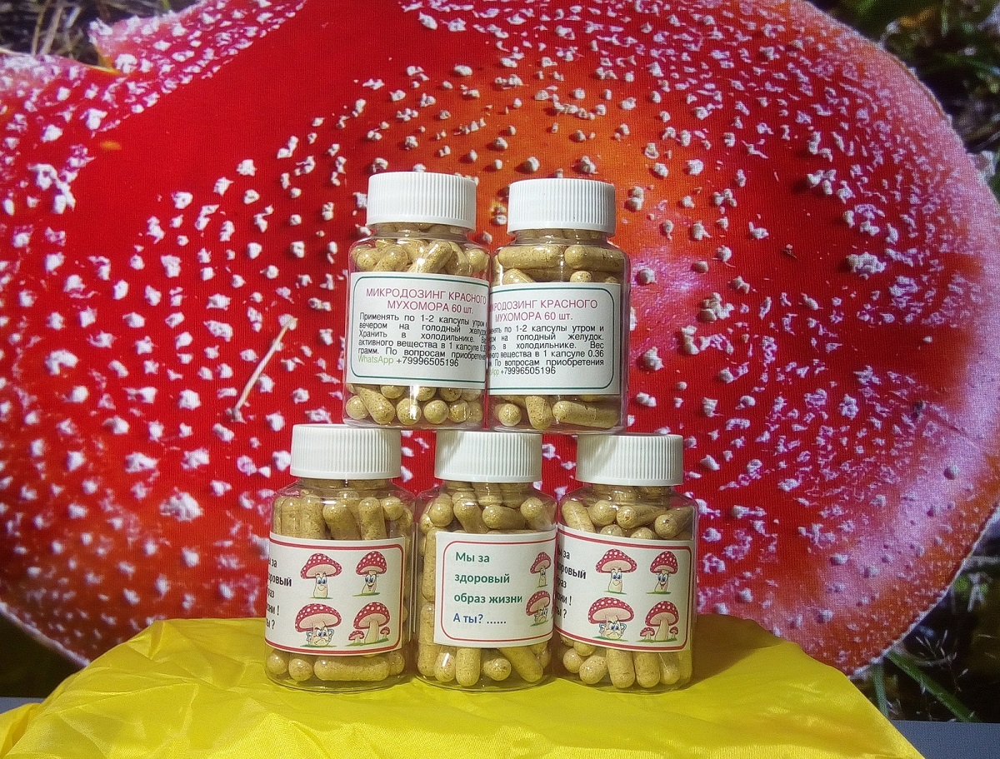
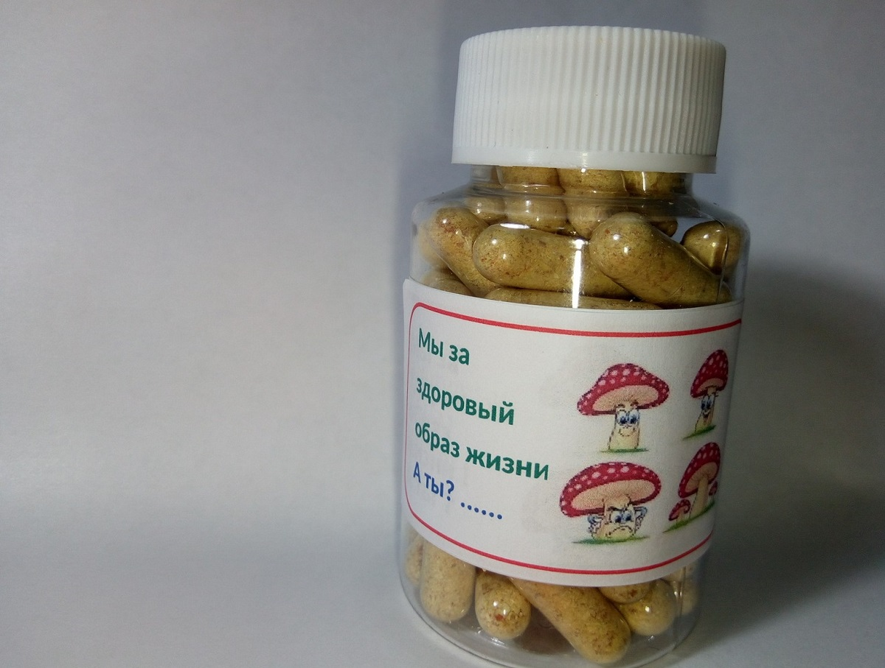

Цена:
Закончились!
Свежий урожай привезу в сентябре 2022
Микродозинг мухоморами купить
Цена:
от 1 до 2 шт. - 1800 руб.,
от 3 до 4 шт. - 1700 руб.,
от 5 шт. - 1600 руб./1
шт.
1 баночка = 60 капсул
Закончились!
Свежий урожай привезу в сентябре 2022

Купить мухомор в капсулах
При заказе от 5 шт. - доставка по Сочи, Адлер и Красной поляне -
бесплатно. Доставка по России - бесплатно от 5 шт. (почта России)
Заранее согласовывайте заказ на WhatsApp
тел. + 7 999 650 51 96